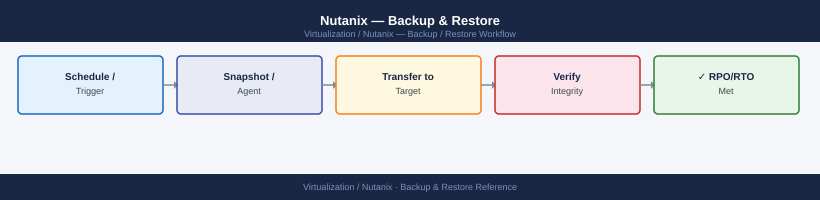

Nutanix — Backup & Restore¶

Before you begin¶
- Access: Prism Element admin (for PD/local snapshots); Prism Central admin (for DR policies)
- Networking: Remote site must be reachable on TCP port 2009 from source CVMs
- Licensing: Nutanix DR (PC-managed) requires Nutanix Pro or Ultimate license
Backup Approaches¶
| Approach | Granularity | RPO | Licence |
|---|---|---|---|
| Protection Domain (legacy) | VM group | Hourly | Included with AOS |
| Nutanix DR (PC-managed) | Per VM or category | Minutes | Pro/Ultimate |
| Veeam for AHV | Per VM | Minutes | Veeam licence |
| HYCU | Per VM / app | Minutes | HYCU licence |
| Nutanix Objects + script | Data-only | Hours | Objects licence |
Native Snapshots (Local — No Replication)¶
Local snapshots protect against accidental deletion or corruption, not node failure.
# Create a crash-consistent snapshot
acli vm.snapshot_create <vm-name> snapshot_name=pre-change-$(date +%Y%m%d)
# Create app-consistent snapshot (requires NGT installed)
acli vm.snapshot_create <vm-name> \
snapshot_name=<snap-name> \
vm_consistency_type=APPLICATION_CONSISTENT
# List snapshots
acli vm.snapshot_list <vm-name>
# Restore (VM must be off)
acli vm.off <vm-name>
acli vm.snapshot_revert <vm-name> snapshot_name=<snap-name>
acli vm.on <vm-name>
# Delete snapshot to free space
acli vm.snapshot_delete <vm-name> snapshot_name=<snap-name>
Creating snapshot for VM 'prod-db-01'...
Snapshot 'pre-change-20240115' created successfully.
UUID: 00051234-1234-1234-1234-123456789abc
Creating application-consistent snapshot for VM 'prod-db-01'...
Snapshot 'pre-change-appcons' created successfully.
UUID: 00051235-5678-5678-5678-567890123def
VM 'prod-db-01' snapshots:
pre-change-20240115 (crash-consistent) — Size: 2.3 GB — Created: 2024-01-15 14:22:33
pre-change-appcons (application-consistent) — Size: 2.3 GB — Created: 2024-01-15 14:23:18
Powering off VM 'prod-db-01'...
VM 'prod-db-01' powered off.
Reverting VM 'prod-db-01' to snapshot 'pre-change-appcons'...
Snapshot revert completed successfully.
Powering on VM 'prod-db-01'...
VM 'prod-db-01' powered on.
Deleting snapshot 'pre-change-20240115'...
Snapshot deleted successfully. Freed 2.3 GB.
Common errors
Error: VM must be powered off before reverting snapshot — Power off the VM with acli vm.off <vm-name> before running snapshot_revert.
Error: NGT not installed on VM for APPLICATION_CONSISTENT snapshots — Install Nutanix Guest Tools on the VM or use crash-consistent snapshots instead.
Error: Snapshot 'pre-change-appcons' not found — Verify the snapshot name exists by running acli vm.snapshot_list <vm-name> and use the exact name from the output.
Protection Domains (Replication to Remote Cluster)¶
Protection Domains (PDs) group VMs, take coordinated snapshots, and replicate to a remote Nutanix cluster.
Setup Remote Site¶
# Configure the remote cluster as a remote site
ncli remote-site create name=<dr-site-name> \
address-list=<remote-cvm-ip>
# Verify connectivity
ncli remote-site ping name=<dr-site-name>
Remote site 'dr-site-prod' created successfully with UUID: 12345678-1234-1234-1234-123456789abc
Address: 192.168.50.29
Status: Created
Pinging remote site 'dr-site-prod' (192.168.50.29)...
Response time: 45ms
Remote site is reachable and responding
Connection status: HEALTHY
Common errors
Error: Invalid address format for remote site — Verify the remote CVM IP is valid and reachable; use ping <remote-cvm-ip> to test connectivity first.
Error: Remote site 'dr-site-prod' already exists — Choose a unique name for the remote site or delete the existing one with ncli remote-site delete name=<dr-site-name>.
Error: Connection timeout - unable to reach remote site at 192.168.50.29 — Confirm network connectivity between clusters, check firewall rules allow port 2009, and verify the remote CVM IP address is correct.
Create and Configure Protection Domain¶
# Create PD
ncli pd create name=<pd-name>
# Add VMs
ncli pd add-vms name=<pd-name> vm-names=vm1,vm2,vm3
# Schedule snapshots with replication
ncli pd set-schedule name=<pd-name> \
app-consistent=false \
every-nth=3600 \ # every 1 hour
num-snaps-to-retain=24 \ # keep 24 local copies
remote-site-list=<dr-site-name>
# Take an immediate snapshot and replicate
ncli pd snapshot name=<pd-name>
Protection Domain created successfully with UUID: 00051234-1234-1234-1234-123456789abc
Name: prod-db-pd
State: ACTIVE
VMs added to Protection Domain prod-db-pd:
vm1 (UUID: 00051111-1111-1111-1111-111111111111)
vm2 (UUID: 00052222-2222-2222-2222-222222222222)
vm3 (UUID: 00053333-3333-3333-3333-333333333333)
Schedule configured for Protection Domain prod-db-pd:
Snapshot interval: 3600 seconds (1 hour)
Snapshots to retain: 24
App-consistent: false
Remote replication site: dr-site-prod
Next scheduled snapshot: 2024-01-15 14:30:00 UTC
Snapshot initiated for Protection Domain prod-db-pd
Snapshot UUID: 00054444-4444-4444-4444-444444444444
Replication to dr-site-prod in progress...
Replication completed successfully
Common errors
Error: Protection Domain '<pd-name>' already exists — Use a unique name or delete the existing PD with ncli pd delete name=<pd-name> first.
Error: VM 'vm1' not found or not accessible — Verify VM names are correct and the Prism user has permissions to access those VMs.
Error: Remote site '<dr-site-name>' is not reachable or not configured — Confirm the DR site is registered in Prism and network connectivity exists between clusters.
Monitor Replication¶
ncli pd get name=<pd-name> # PD status, last snapshot, replication state
ncli pd ls-snapshots name=<pd-name> # list snapshots (local + remote)
# Check replication transfer progress
ncli pd get name=<pd-name> | grep -i "replication\|bytes"
Protection Domain: prod-db-pd
UUID: 12a4f8c9-3e2b-47d1-9c5a-8f2e1d3b4c6a
Description: Production Database Protection Domain
Active: true
Metro Avail: false
Backup Enabled: true
Last Snapshot Time: 2024-01-15 14:32:18
Replication State: Active
Remote Site: dr-cluster-01
Bytes Protected: 2.847 TB
Replication Bytes Transferred: 2.847 TB
Replication Bytes Remaining: 0 B
Replication Transfer Rate: 0 B/s
Last Replication Time: 2024-01-15 14:35:42
Snapshot UUID Creation Time Expiration Time
12a4f8c9-3e2b-47d1-9c5a-8f2e1d3b4c6a 2024-01-15 14:32:18 2024-02-14 14:32:18
8f2e1d3b-4c6a-12a4-f8c9-3e2b47d19c5a 2024-01-14 14:30:05 2024-02-13 14:30:05
3e2b47d1-9c5a-8f2e-1d3b-4c6a12a4f8c9 2024-01-13 14:28:52 2024-02-12 14:28:52
...
Replication State: Active
Bytes Protected: 2.847 TB
Replication Bytes Transferred: 2.847 TB
Replication Bytes Remaining: 0 B
Common errors
Error: Protection Domain <pd-name> not found — Verify the PD name with ncli pd ls and use the exact name from the output.
Error: Connection refused (10.0.0.1:9440) — Ensure the Nutanix cluster is reachable and ncli is configured with correct cluster credentials via ncli -h <cluster-ip>.
Failover to Remote Site¶
# Activate PD on remote site (failover)
# SSH to remote CVM
ncli pd activate name=<pd-name>
# VMs are restored from the latest replicated snapshot
# Power on VMs manually after activation:
acli vm.on <vm-name>
ncli pd activate name=prod-pd-01
Activating Protection Domain prod-pd-01...
Protection Domain prod-pd-01 activated successfully.
Latest snapshot: 2024-01-15T14:32:18Z (RPO: 2 minutes)
Restored VM count: 47
VM power state: OFF (manual activation required)
acli vm.on web-server-01
VM web-server-01 powered on successfully.
acli vm.on app-server-02
VM app-server-02 powered on successfully.
acli vm.on db-primary-03
VM db-primary-03 powered on successfully.
Common errors
ncli pd activate name=prod-pd-01: Error: Protection Domain not found — Verify the PD name matches exactly with ncli pd list and confirm you are connected to the correct remote cluster.
acli vm.on web-server-01: Error: VM not found or not in activated PD — Ensure the PD activation completed successfully and the VM name is correct; use acli vm.list to verify VM presence on the remote site.
ncli pd activate name=prod-pd-01: Error: Protection Domain is already active — The PD is already activated on this site; check if failover was already completed or if you are on the wrong cluster.
Nutanix DR (Prism Central — Policy-Based)¶
Nutanix DR replaces Protection Domains for new deployments. Managed entirely from Prism Central.
Create a Recovery Plan¶
Prism Central → Data Protection → Recovery Plans → Create Recovery Plan
Source cluster: <primary>
Target cluster: <dr-site>
Network mappings: map source VLANs to DR VLANs
Boot order: define VM startup sequence (DB before App before Web)
Create a Protection Policy¶
Prism Central → Data Protection → Protection Policies → Create
Primary location: <primary cluster>
Recovery location: <dr cluster>
RPO: 1 hour (minimum: 1 minute with async replication)
Retention: local 24 snapshots, remote 7 days
Assign categories: tag VMs with the policy category
Assign VMs to Policy¶
VMs with the category are automatically protected by the policy.
Test Failover (Non-Disruptive)¶
Prism Central → Recovery Plans → select plan → Test Failover
Target: DR cluster
Power on VMs: Yes (in test network, isolated)
Review results, then clean up test VMs
Veeam Backup & Replication for AHV¶
Veeam uses the Nutanix AHV Backup Proxy (a Veeam-provided VM on AHV) to back up VMs via the AOS snapshot API.
Architecture¶
Veeam Backup Server → Nutanix AHV Backup Proxy VM → AOS API → VM Snapshots
↓
Veeam Backup Repository (NFS/SMB/S3/dedup appliance)
Initial Setup¶
1. Deploy Veeam AHV Backup Proxy OVA on the Nutanix cluster
2. In Veeam Backup & Replication:
Backup Infrastructure → Managed Servers → Add Server
Type: Nutanix AHV
Address: <Prism Element IP>
Credentials: Nutanix admin
3. Configure backup repository (target storage for backups)
4. Create backup job:
Backup Jobs → New Job → Virtual Machine
Select VMs or categories
Backup repository: <configured repo>
Schedule: daily at 02:00
Retention: 14 days
Restore Options¶
- Full VM restore: Veeam → Restores → select backup → Restore entire VM
- Disk restore: restore individual vDisks to a VM
- File-level restore: Windows: Veeam Explorer; Linux: mount backup as NFS
HYCU for Nutanix¶
HYCU is a purpose-built backup solution for Nutanix with direct AOS API integration.
1. Deploy HYCU appliance from Nutanix Marketplace or OVA
2. Connect to Nutanix cluster: HYCU UI → Sources → Add
3. Assign targets (S3, NFS, SMB) → Targets → Add
4. Create backup policies and assign to VMs or categories
5. Schedule: daily full or incremental
HYCU supports application-aware backup (Exchange, SQL, Oracle) without agents by leveraging NGT VSS integration.
Restore Runbook¶
Restore a VM from Nutanix Snapshot¶
# List available snapshots
acli vm.snapshot_list <vm-name>
# Restore (clone from snapshot to avoid overwriting original)
acli vm.clone <vm-name> \
clone_vm_name=<vm-name>-restored \
snapshot_name=<snap-name>
# OR revert in place (destructive — VM must be off)
acli vm.off <vm-name>
acli vm.snapshot_revert <vm-name> snapshot_name=<snap-name>
acli vm.on <vm-name>
acli vm.snapshot_list prod-web-01
Snapshot UUID | Snapshot Name | Created (UTC) | Size (GB)
12a4f8c9-7e2b-4d61-9c3a-5b8e1f2d9c4a | daily-2024-01-15 | 2024-01-15 02:30:45 | 245.6
3f7d2e1c-9a4b-5c8f-1d6e-7a9c2b5f8e3d | daily-2024-01-14 | 2024-01-14 02:30:12 | 243.2
8c5a1f9e-3d7b-4c2a-6e9f-1b4d7a2c5e8f | weekly-2024-01-08 | 2024-01-08 03:15:22 | 238.9
acli vm.clone prod-web-01 clone_vm_name=prod-web-01-restored snapshot_name=daily-2024-01-15
Cloning VM from snapshot...
Clone task UUID: 7f3e8c1a-9d2b-5f4c-1a6e-3c7b9e2d5a8f
Clone completed successfully. New VM: prod-web-01-restored
acli vm.off prod-web-01
Powering off VM...
VM powered off successfully.
acli vm.snapshot_revert prod-web-01 snapshot_name=daily-2024-01-15
Reverting VM to snapshot daily-2024-01-15...
Revert completed successfully.
acli vm.on prod-web-01
Powering on VM...
VM powered on successfully.
Common errors
Error: VM prod-web-01 is powered on. Cannot revert snapshot on running VM. — Power off the VM with acli vm.off <vm-name> before attempting snapshot revert.
Error: Snapshot daily-2024-01-15 not found for VM prod-web-01. — Verify the snapshot name exists by running acli vm.snapshot_list <vm-name> and use the exact snapshot name from the output.
Restore a VM from Protection Domain¶
# List snapshots in the PD
ncli pd ls-snapshots name=<pd-name>
# Restore VM from a specific snapshot
ncli pd restore-vm name=<pd-name> \
vm-names=<vm-name> \
snapshot-id=<snapshot-id> \
restore-network-configuration=true
PD Name Snapshot ID Created Time Size (GB)
prod-cluster-pd a1b2c3d4-e5f6-47g8-h9i0-j1k2l3m4n5o6 2024-01-15 14:32:18 245.3
prod-cluster-pd b2c3d4e5-f6g7-48h9-i0j1-k2l3m4n5o6p7 2024-01-14 09:15:42 245.3
prod-cluster-pd c3d4e5f6-g7h8-49i0-j1k2-l3m4n5o6p7q8 2024-01-13 22:47:05 245.3
Task ID: task-12345
Status: SUCCEEDED
Restore VM 'web-server-01' from snapshot 'a1b2c3d4-e5f6-47g8-h9i0-j1k2l3m4n5o6'
Restore completed in 4 minutes 23 seconds
Network configuration restored: eth0 (192.168.1.45/24), eth1 (10.0.0.12/24)
Common errors
Error: PD 'prod-cluster-pd' not found — Verify the PD name with ncli pd ls and ensure you have cluster connectivity.
Error: Snapshot ID 'a1b2c3d4-e5f6-47g8-h9i0-j1k2l3m4n5o6' does not exist for PD 'prod-cluster-pd' — Confirm the snapshot ID matches the output of ncli pd ls-snapshots for the correct PD.
Error: VM 'web-server-01' already exists in the cluster — Use a different VM name in the restore command or delete the existing VM before restoring.
Verify¶
- Snapshot present:
acli vm.snapshot_list <vm-name>shows expected snapshots - Replication healthy:
ncli pd get name=<pd-name>shows last successful replication timestamp within RPO window - Restored VM reachable: ping and application-level test after restore
- Storage not over capacity:
ncli ctr listshows < 70% used after snapshot creation